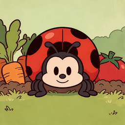
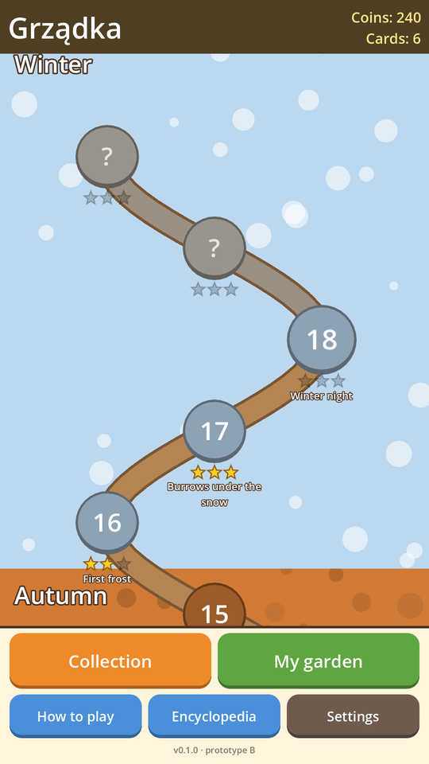
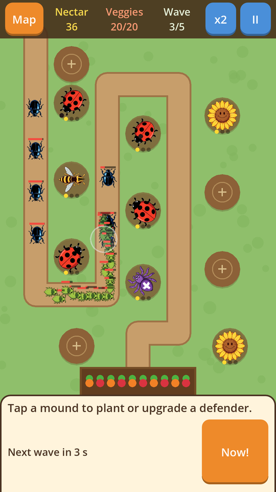
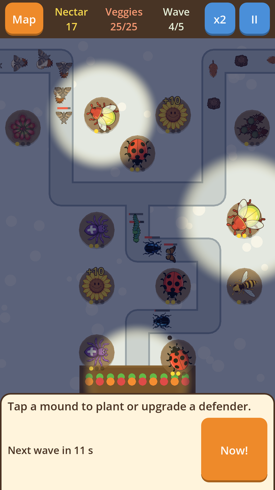
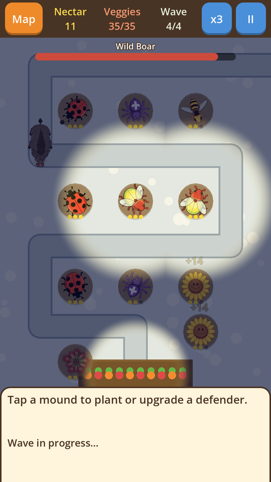
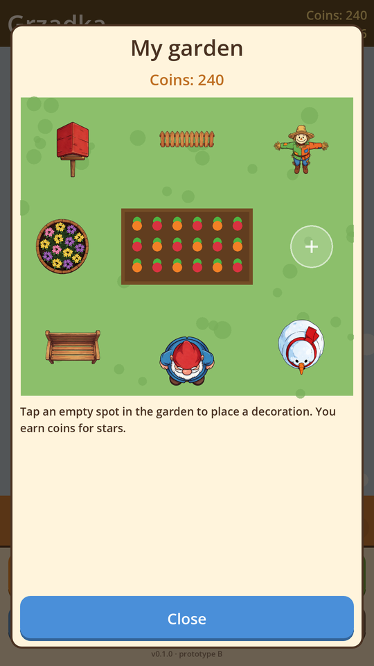
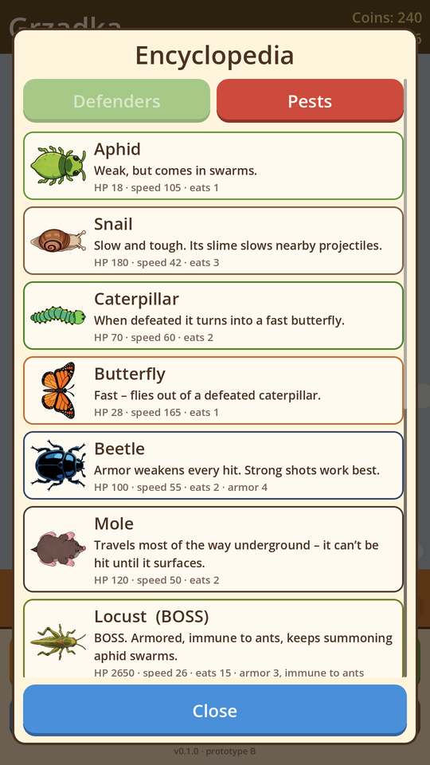

A cozy tower defense for one thumb. Plant cheerful defenders along the path and keep every carrot and tomato safe from hungry pests.
Free · no ads · no sign-in · 6 languages






Ladybugs shoot fast, spiders slow pests with webs, wasps blast swarms, sundews swallow small bugs, frogs snipe the toughest ones and sunflowers give nectar.
A winding world map from Spring to Winter, with armored beetles, sneaky moles, self-healing grubs, moths, field mice and diving voles.
At night your towers see less. Plant fireflies to light up the garden and bring your defenders back to full range.
The Locust that summons swarms, the armored Giant Chafer and the Wild Boar that goes wild when wounded.
Earn stars, coins and cards, upgrade your towers for good and decorate your own garden with gnomes, birdhouses and a pond.
Short levels, big buttons, portrait mode. English, Polish, German, Spanish, French and Portuguese.
Grządka is in testing on Google Play right now. Until then you can play the full game in your browser, on a phone or a computer.
No. The game is free, has no ads and no in-app purchases.
Only anonymous gameplay events (like "level started" or "tower placed") with a random install ID, to balance the game. No names, emails, location or ad IDs, and you can turn it off in Settings. Details in the privacy policy.
On your device only (in the browser: in the browser's storage). Clearing site data or uninstalling the game removes it.